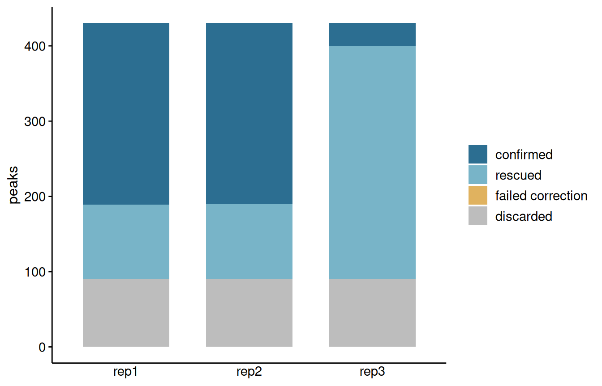
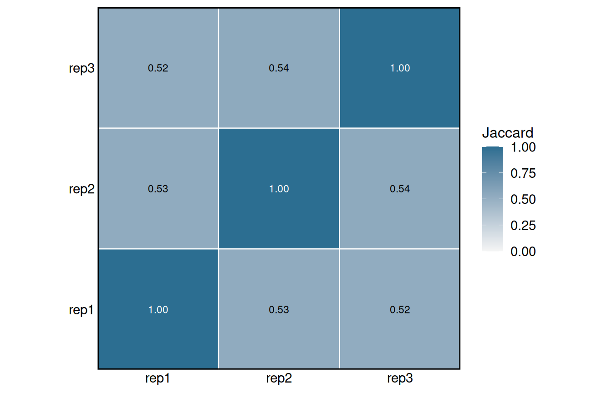
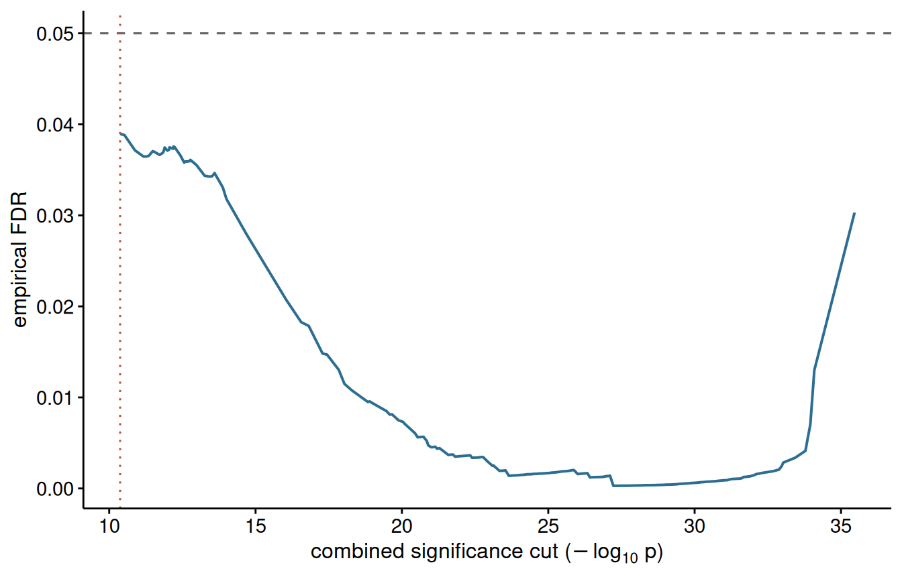

Consensus regions across replicated experiments
Sebastian Gregoricchio, Ph.D.
Netherlands Cancer Institute, Oncogenomics division, Amsterdam - Netherlandss.gregoricchio@nki.nl
Last update: 19th November, 2026
Source:vignettes/consensusRegions.vignette.Rmd
consensusRegions.vignette.RmdIntroduction
Replicates disagree. A region can be convincing in two samples and just below threshold in the third, and the usual response, taking the intersection of the peak sets, throws it away. Taking the union instead keeps it along with every piece of noise the worst replicate produced.
consensusRegions does neither. Each peak is examined
together with the peaks that overlap it in the other replicates, and
their p-values are combined into one. Repeated weak evidence then adds
up to something that survives, while a strong peak nobody else saw does
not. The idea comes from MSPC (Jalili et
al., 2015); what is added here is the ability to weight
replicates, to calibrate the decision threshold rather than fix it, and
to work with peak files that have lost their statistics.
Bioconductor offers other ways to reach a consensus.
DiffBind counts how many replicates called a peak and keeps
the regions that clear a minOverlap threshold, which asks
nothing about how convincing those calls were; IDR measures how
reproducibly two replicates rank the same regions, and answers a
question about the pair rather than returning a region set for an
arbitrary number of samples. Here the evidence itself is combined, so a
region can be kept on three mediocre calls and dropped on one excellent
call that nobody else saw.
Installation
The package is installed from Bioconductor:
if (!requireNamespace("BiocManager", quietly = TRUE)) {
install.packages("BiocManager")
}
BiocManager::install("consensusRegions")Once installed, load it as usual:
Reading peaks
The example data is three replicates over two chromosomes, with a deliberately shallow third sample.
peakFiles <- system.file("extdata",
c("rep1.narrowPeak",
"rep2.narrowPeak",
"rep3.narrowPeak"),
package = "consensusRegions")
peaks <- readPeakSets(peakFiles, sampleNames = c("rep1", "rep2", "rep3"))
peaks
> GRangesList object of length 3:
> $rep1
> GRanges object with 430 ranges and 7 metadata columns:
> seqnames ranges strand | name score signalValue
> <Rle> <IRanges> <Rle> | <character> <numeric> <numeric>
> [1] chr1 57515-58142 * | peak_1 98 2.72737
> [2] chr1 102197-103030 * | peak_2 124 3.46213
> [3] chr1 145913-146341 * | peak_3 192 5.35816
> [4] chr1 217889-218140 * | peak_4 58 1.63109
> [5] chr1 235442-235885 * | peak_5 85 2.37401
> ... ... ... ... . ... ... ...
> [426] chr2 8631942-8632279 * | peak_426 98 2.74174
> [427] chr2 8742508-8742933 * | peak_427 61 1.71393
> [428] chr2 8745954-8746585 * | peak_428 212 5.90034
> [429] chr2 8772842-8773607 * | peak_429 204 5.66718
> [430] chr2 8862653-8863473 * | peak_430 170 4.73122
> pValue qValue peak negLog10P
> <numeric> <numeric> <integer> <numeric>
> [1] 8.18212 7.18212 295 8.18212
> [2] 10.38638 9.38638 392 10.38638
> [3] 16.07448 15.07448 236 16.07448
> [4] 4.89327 3.89327 112 4.89327
> [5] 7.12203 6.12203 220 7.12203
> ... ... ... ... ...
> [426] 8.22521 7.22521 188 8.22521
> [427] 5.14178 4.14178 233 5.14178
> [428] 17.70101 16.70101 299 17.70101
> [429] 17.00155 16.00155 353 17.00155
> [430] 14.19366 13.19366 435 14.19366
> -------
> seqinfo: 2 sequences from an unspecified genome; no seqlengths
>
> $rep2
> GRanges object with 430 ranges and 7 metadata columns:
> seqnames ranges strand | name score signalValue
> <Rle> <IRanges> <Rle> | <character> <numeric> <numeric>
> [1] chr1 57552-58092 * | peak_1 141 3.93745
> [2] chr1 102200-102630 * | peak_2 118 3.28321
> [3] chr1 145909-146277 * | peak_3 103 2.87270
> [4] chr1 201963-202312 * | peak_4 67 1.87344
> [5] chr1 235377-235868 * | peak_5 54 1.51754
> ... ... ... ... . ... ... ...
> [426] chr2 8651848-8652239 * | peak_426 56 1.57910
> [427] chr2 8742442-8742750 * | peak_427 66 1.83676
> [428] chr2 8745997-8746366 * | peak_428 108 3.02740
> [429] chr2 8772694-8773478 * | peak_429 140 3.89196
> [430] chr2 8862514-8863166 * | peak_430 114 3.18792
> pValue qValue peak negLog10P
> <numeric> <numeric> <integer> <numeric>
> [1] 11.81234 10.81234 265 11.81234
> [2] 9.84962 8.84962 214 9.84962
> [3] 8.61810 7.61810 161 8.61810
> [4] 5.62032 4.62032 170 5.62032
> [5] 4.55263 3.55263 239 4.55263
> ... ... ... ... ...
> [426] 4.73729 3.73729 219 4.73729
> [427] 5.51028 4.51028 161 5.51028
> [428] 9.08219 8.08219 175 9.08219
> [429] 11.67587 10.67587 402 11.67587
> [430] 9.56377 8.56377 325 9.56377
> -------
> seqinfo: 2 sequences from an unspecified genome; no seqlengths
>
> $rep3
> GRanges object with 430 ranges and 7 metadata columns:
> seqnames ranges strand | name score signalValue
> <Rle> <IRanges> <Rle> | <character> <numeric> <numeric>
> [1] chr1 57439-57955 * | peak_1 92 2.55995
> [2] chr1 102191-102497 * | peak_2 59 1.64347
> [3] chr1 145851-146446 * | peak_3 69 1.93957
> [4] chr1 235338-235729 * | peak_4 48 1.35000
> [5] chr1 240015-240714 * | peak_5 66 1.84047
> ... ... ... ... . ... ... ...
> [426] chr2 8742492-8743024 * | peak_426 48 1.35000
> [427] chr2 8745833-8746478 * | peak_427 82 2.30257
> [428] chr2 8772831-8773465 * | peak_428 78 2.17616
> [429] chr2 8862620-8863418 * | peak_429 57 1.60899
> [430] chr2 8986598-8986983 * | peak_430 55 1.55471
> pValue qValue peak negLog10P
> <numeric> <numeric> <integer> <numeric>
> [1] 7.67984 6.67984 234 7.67984
> [2] 4.93041 3.93041 125 4.93041
> [3] 5.81871 4.81871 304 5.81871
> [4] 4.05000 3.05000 181 4.05000
> [5] 5.52140 4.52140 369 5.52140
> ... ... ... ... ...
> [426] 4.05000 3.05000 264 4.05000
> [427] 6.90770 5.90770 293 6.90770
> [428] 6.52848 5.52848 324 6.52848
> [429] 4.82697 3.82697 379 4.82697
> [430] 4.66414 3.66414 180 4.66414
> -------
> seqinfo: 2 sequences from an unspecified genome; no seqlengthsreadPeakSets() inspects the files and reports which
statistic it can use. narrowPeak keeps -log10 p-values in its eighth
column, so those go straight in. A BED with only a score gets
rank-transformed. A bare BED3 has nothing at all, and the analysis will
fall back to counting replicates instead of combining evidence.
Chromosome naming
Peak files rarely agree on whether a chromosome is called
chr1 or 1. Two replicates that name the same
chromosome differently share no overlap at all, so every peak is
discarded for lack of support and the result looks like a biological
finding rather than a clerical one.
readPeakSets() therefore harmonises the names on the way
in, defaulting to UCSC style, in the same way as
loadRegions() in RegionSetDE,
by the same author:
withChr <- GenomicRanges::GRanges("chr1",
IRanges::IRanges(start = c(1000, 20000),
width = 500))
withoutChr <- GenomicRanges::GRanges("1",
IRanges::IRanges(start = c(1100, 20100),
width = 500))
mixed <- readPeakSets(list(a = withChr, b = withoutChr),
seqlevelsStyle = "UCSC")
GenomeInfoDb::seqlevels(mixed[["b"]])
> [1] "chr1""Ensembl" and "NCBI" go the other way,
stripping the prefix. Setting seqlevelsStyle = NULL leaves
the names untouched and stops if the replicates disagree, which is the
safe choice when you would rather see the mismatch than have it quietly
repaired.
Call peaks permissively
This is a critical issue that can substantially affect the validity
of the entire analysis. If you call peaks at q < 0.05
and run the consensus on what survives, there is nothing left to rescue
and you have written an intersection with extra steps. Call at something
like p < 0.001 and let buildConsensus() do
the thresholding. The two-tier design assumes exactly this.
Quick start
result <- buildConsensus(peaks, verbose = FALSE)
result
> ConsensusRegions
> replicates : 3 ( rep1, rep2, rep3 )
> score type : log10pvalue
> combination : stouffer
> combined cut : 1e-08
> weights : rep1=1, rep2=1, rep3=1
> consensus : 292 regions
> width (median) : 786.5 bp
> width (max) : 2200 bpThe per-replicate summary is where to look first.
consensusStats(result)
> DataFrame with 3 rows and 9 columns
> replicate nTested nStringent nWeak nConfirmed nRescued
> <character> <integer> <integer> <integer> <integer> <integer>
> 1 rep1 430 241 189 340 99
> 2 rep2 430 240 190 340 100
> 3 rep3 430 30 400 340 310
> nFalsePositive nDiscarded rescueRate
> <integer> <integer> <numeric>
> 1 0 90 0.291176
> 2 0 90 0.294118
> 3 0 90 0.911765nRescued counts peaks that were only weak on their own
and were kept because the others agreed. That number is the reason to
use this method, and also the thing to be suspicious of. If it dwarfs
everything else, weakThreshold is too permissive and the
combination is confirming noise.
plotRescue(result)
The consensus regions carry the number of contributing replicates and a significance recomputed from their member peaks.
head(consensusRanges(result), 3)
> GRanges object with 3 ranges and 4 metadata columns:
> seqnames ranges strand | nReplicates nPeaks replicates
> <Rle> <IRanges> <Rle> | <integer> <integer> <character>
> [1] chr1 57439-58142 * | 3 3 rep1,rep2,rep3
> [2] chr1 102191-103030 * | 3 3 rep1,rep2,rep3
> [3] chr1 145851-146446 * | 3 3 rep1,rep2,rep3
> combinedNegLog10P
> <numeric>
> [1] 25.2442
> [2] 22.3973
> [3] 26.9232
> -------
> seqinfo: 2 sequences from an unspecified genome; no seqlengthsWeighting the replicates
Fisher’s method treats every replicate as equally informative. Yours probably are not: one is shallower, or has a worse antibody, or was prepared on a bad day. The choices are usually to drop it, which wastes data, or to keep it and let it drag the combined statistic around. Weighting is the third option.
When the BAM files are available, FRiP and library size can be measured directly:
weights <- computeReplicateWeights(peaks,
method = "frip",
bamFiles = c("rep1.bam",
"rep2.bam",
"rep3.bam"))More often the alignments are long gone and only the numbers survive in an old QC report. Pass them in:
weights <- computeReplicateWeights(peaks,
method = "frip",
frip = c(0.21, 0.19, 0.06),
verbose = FALSE)
weights
> rep1 rep2 rep3
> 1.3695652 1.2391304 0.3913043
> attr(,"metrics")
>
[38;5;246m# A tibble: 3 × 3
[39m
> replicate frip librarySize
>
[3m
[38;5;246m<chr>
[39m
[23m
[3m
[38;5;246m<dbl>
[39m
[23m
[3m
[38;5;246m<dbl>
[39m
[23m
>
[38;5;250m1
[39m rep1 0.21
[31mNA
[39m
>
[38;5;250m2
[39m rep2 0.19
[31mNA
[39m
>
[38;5;250m3
[39m rep3 0.06
[31mNA
[39mAnd when there is nothing but the peaks themselves, each replicate can be scored by how well it agrees with the others:
computeReplicateWeights(peaks,
method = "intrinsic",
verbose = FALSE)
> rep1 rep2 rep3
> 0.9925346 1.0069021 1.0005633
> attr(,"metrics")
>
[38;5;246m# A tibble: 3 × 2
[39m
> replicate jaccard
>
[3m
[38;5;246m<chr>
[39m
[23m
[3m
[38;5;246m<dbl>
[39m
[23m
>
[38;5;250m1
[39m rep1 0.525
>
[38;5;250m2
[39m rep2 0.533
>
[38;5;250m3
[39m rep3 0.529That last measure is circular, since agreement is also what the consensus is testing. Use it when there is no alternative, not in preference to FRiP.
Weights only reach the combination through Stouffer’s Z or Lancaster’s method. Fisher and the rank product ignore them.
weighted <- buildConsensus(peaks,
weights = weights,
combinationMethod = "stouffer",
verbose = FALSE)
consensusStats(weighted)
> DataFrame with 3 rows and 9 columns
> replicate nTested nStringent nWeak nConfirmed nRescued
> <character> <integer> <integer> <integer> <integer> <integer>
> 1 rep1 430 241 189 340 99
> 2 rep2 430 240 190 340 100
> 3 rep3 430 30 400 340 310
> nFalsePositive nDiscarded rescueRate
> <integer> <integer> <numeric>
> 1 0 90 0.291176
> 2 0 90 0.294118
> 3 0 90 0.911765
plotJaccard(weighted)
Which weighting method to use
The five settings differ in what they score a replicate on, and in what they cost you to obtain.
method |
Scored on | Needs | Weight is |
|---|---|---|---|
"equal" |
nothing | nothing |
1 throughout |
"frip" |
signal |
bamFiles or frip
|
the fraction |
"librarySize" |
depth |
bamFiles/librarySize
|
sqrt of depth |
"intrinsic" |
agreement | the peak sets alone | mean Jaccard |
"custom" |
your call | a numeric vector | what you pass |
"frip" takes the fraction straight from an old QC report
when the alignments are gone, and "intrinsic" scores a
replicate on its mean pairwise Jaccard index with the others.
Whichever you pick, the weights are rescaled to average one, so the combined statistics stay on the scale they would have had unweighted and a threshold carries across runs.
A few extra details:
-
"equal"is the default and the reproducible choice. Nothing about the data steers the result, which is what you want unless you have a reason to think one replicate deserves less say than another. -
"frip"is the one to reach for when the alignments, or the numbers someone once computed from them, still exist. It measures the thing you care about: how much of the sequencing landed in peaks. -
"librarySize"counts depth twice to some extent, because peak-caller p-values already respond to it. Prefer"frip"when both are at hand. -
"intrinsic"is circular. It scores a replicate on the agreement that the consensus then goes on to test, so strong agreement earns a large weight which in turn makes the agreement look stronger. It is there for the case where all that survives is a folder of BED files, not as an alternative to FRiP. - There is no
"drop". Removing a bad replicate is something you do beforereadPeakSets()ever sees it, and weighting exists so that you usually do not have to.
Choosing the combination method
| Method | Weights | Use it when |
|---|---|---|
fisher |
no | Reproducing MSPC, or replicates are comparable |
stouffer |
yes | Default. Replicate quality varies |
lancaster |
yes | Weights, with Fisher’s pull from one strong peak |
rankProduct |
no | Only scores, or p-values you do not trust |
One caveat about Fisher that matters more than it usually gets credit for: the combined statistic keeps accumulating as replicates are added. With three samples this is fine. With twenty donors, a region detected faintly in all of them starts to look overwhelmingly significant, which is not what anyone means by reproducible. Stouffer and the rank product degrade more gracefully at that scale.
The threshold does not carry across methods. Fisher, Stouffer and
Lancaster all sit on roughly the same scale, so a cut chosen for one is
a reasonable starting point for the others. The rank product does not.
It works on relative ranks, so the best a peak can possibly do is come
first in every replicate, and that bound depends on how many peaks each
replicate holds. With the few hundred peaks in this example the smallest
attainable combined p-value is around 1e-4, and asking for
1e-8 would return nothing at all.
buildConsensus() checks for this and refuses rather than
handing back an empty result:
buildConsensus(peaks,
combinationMethod = "rankProduct",
verbose = FALSE)
>
[1m
[33mError
[39m in `buildConsensus()`:
[22m
>
[33m!
[39m the rank product cannot reach a combined p-value of 1e-08 with these peak sets: the smallest attainable is 7.07e-05, because the statistic is bounded by the number of peaks per replicate. Lower 'combinedThreshold', or let calibrateThreshold() choose oneGive it a threshold on its own scale, or let the calibration below pick one:
ranked <- buildConsensus(peaks,
combinationMethod = "rankProduct",
combinedThreshold = 0.05,
verbose = FALSE)
length(ranked)
> [1] 0Nothing survives, and the reason is the size of the example rather than any weakness in the method. With only a few hundred peaks per replicate the finest relative rank available is about 1/430, which is not a small number, so no peak accumulates much evidence however well it ranks. What little it does accumulate is then spent on the multiple testing correction described in the next section. Relax that correction to the one MSPC uses and the peaks reappear:
relaxed <- buildConsensus(peaks,
combinationMethod = "rankProduct",
combinedThreshold = 0.05,
adjustmentFamily = "confirmed",
verbose = FALSE)
length(relaxed)
> [1] 38On a real peak set of 10^5 calls the ranks are three orders of magnitude finer and the rank product survives the stricter correction comfortably. Judge it on your own data, not here.
How many replicates have to agree
The requirement can be stated either way round, because both readings are natural and mixing them up is easy.
minSupport counts the other replicates that
must hold an overlapping peak, which is what the confirmation step
actually works with. minReplicates counts all of them
including the one the peak came from, which is how the requirement is
usually spoken about, and it matches MSPC’s -c. Give one or
the other, never both.
c(byTotal = length(buildConsensus(peaks,
minReplicates = 3,
verbose = FALSE)),
bySupport = length(buildConsensus(peaks,
minSupport = 2,
verbose = FALSE)))
> byTotal bySupport
> 292 292minReplicates also takes a proportion or a percentage,
rounded up, so the requirement can be written the way it is usually
described:
| Requirement | MSPC | minReplicates |
minSupport |
|---|---|---|---|
| 2 of 3 | -c 2 |
2 |
1 |
| 3 of 3 | -c 3 |
3 or "100%"
|
2 |
| 5 of 8 | -c 5 |
5 |
4 |
| 75% of 8 | -c 75% |
"75%" or 0.75
|
5 |
If you are coming from MSPC, use minReplicates and pass
the same value you passed to -c. Setting
minSupport to that value instead asks for one replicate
more than you meant, which is a quiet way to lose peaks.
Note that replicateType = "technical" overrides both and
demands every replicate, on the grounds that technical replicates have
no reason to disagree.
Multiple testing
Peaks that clear the combined threshold are corrected within each replicate by the Benjamini-Hochberg procedure. The question is which peaks make up the family being corrected, and it matters more than it first appears.
MSPC corrects across the peaks that already cleared the threshold.
That family was chosen for being significant, so the usual
Benjamini-Hochberg guarantee does not carry over to it, and the
resulting values can be optimistic.
adjustmentFamily = "tested", the default here, instead
corrects across every peak that entered the analysis.
tested <- buildConsensus(peaks, verbose = FALSE)
mspcStyle <- buildConsensus(peaks,
adjustmentFamily = "confirmed",
verbose = FALSE)
c(tested = length(tested), confirmed = length(mspcStyle))
> tested confirmed
> 292 292On this data the two agree, and that is the normal case: when the
combined evidence is strong the correction is a rounding error against
it. The choice only bites where the evidence was marginal, which is
where you would want it to bite. Use "confirmed" when you
are deliberately reproducing MSPC.
Neither setting delivers exact false discovery rate control, and the package does not claim it does. Two things stand in the way. The supporting peak for each replicate is chosen as the most significant of those overlapping, and a maximum over a selected set is not distributed the way an unselected p-value would be. Overlapping peaks also share supporters, so their combined p-values are not independent. If you need a defensible error rate rather than a ranking, use the empirical route in the next section.
Calibrating the threshold
The cut on the combined p-value is conventionally 1e-8.
That number is a guess, and the right one depends on the number of
replicates, how the peaks were called, and how densely they sit.
calibrateThreshold() estimates it. Peak positions are
shuffled within each chromosome, keeping widths, counts and statistics,
so any overlap between the shuffled replicates arises by chance. Running
the combination on those gives a null, and the threshold is read off
where the expected number of null peaks falls to a chosen fraction of
the observed count.
calibration <- calibrateThreshold(peaks,
nPermutations = 10,
targetFDR = 0.05,
seed = 42,
verbose = FALSE)
calibration
> ThresholdCalibration
> threshold : 4.24e-11 ( -log10 10.37 )
> FDR : 0.03894831 achieved, 0.05 asked for
> permutations : 10
> statistics : 1020 observed, 552 null
> seed : 42 (from seed)The result is a ThresholdCalibration object. Its
components are reached with accessors, and $ works too,
since this was a plain list up to version 0.99.2:
calibrationThreshold(calibration)
> [1] 4.242908e-11
calibrationAchievedFDR(calibration)
> [1] 0.03894831
head(calibrationCurve(calibration), 3)
> cut nObserved expectedNull fdr
> 1 10.37234 1020 39.72727 0.03894831
> 2 10.52061 1014 39.36364 0.03882015
> 3 10.88139 1011 37.54545 0.03713695
plotCalibration(calibration)
Pass the object itself to buildConsensus(), which reads
the threshold out of it and refuses anything that is not a
calibration:
calibrated <- buildConsensus(peaks,
calibration = calibration,
verbose = FALSE)
length(calibrated)
> [1] 292Ten permutations is enough for a demonstration; fifty is a reasonable
working number. The positions are drawn at random, and seed
is what brings the same threshold back. The draws happen inside
BiocParallel, which keeps its random numbers apart from
those of the session, so a set.seed() before the call does
not reach them. The seed is kept with the result, as
calibrationSeed(calibration), and the random numbers of the
session are left as they were.
The permutations are independent of one another and are where nearly
all the time goes, so they are handed to BiocParallel. On a
genome-scale peak set a single round takes tens of seconds, which makes
fifty of them most of an afternoon in series:
calibration <- calibrateThreshold(peaks,
nPermutations = 5,
BPPARAM = 1,
seed = 42)
calibrationSeed(calibration)
> [1] 42BPPARAM takes the number of cores directly, which is how
the question usually gets asked: a real run would say
BPPARAM = 8 and nPermutations = 50, and the
same seed returns the same threshold on one core or on eight. Nothing
runs in parallel unless asked, so the default is a serial backend.
A BiocParallelParam object is accepted too, for finer
control of the workers. It is used exactly as it is, which means the
seed has to travel with the backend, as its RNGseed;
seed is ignored in that case, with a warning, rather than
silently overriding what the object carries:
calibration <- calibrateThreshold(peaks,
nPermutations = 5,
BPPARAM = BiocParallel::SerialParam(RNGseed = 42))
calibration$seedSource
> [1] "BPPARAM"MulticoreParam(workers = 8, RNGseed = 42) is the same
thing with eight workers, and is what the above would be outside a
vignette.
Passing a blacklist through excludeRegions makes the
null more honest, because shuffled peaks otherwise land in artefact
regions where real peaks cluster too.
Input without statistics
Sometimes all that survives of an old analysis is a folder of BED3
files. There is no p-value to combine, so the package says so and
switches to a weighted presence rule: a region is kept when the weights
of the replicates supporting it sum to at least minSupport.
With equal weights that is the familiar k-of-n rule.
minimalFile <- system.file("extdata", "rep1_minimal.bed",
package = "consensusRegions")
minimal <- readPeakSets(rep(minimalFile, 3),
sampleNames = c("a", "b", "c"))
minimalResult <- buildConsensus(minimal, verbose = FALSE)
analysisParameters(minimalResult)$presenceOnly
> [1] TRUEThis is a fallback, not an equivalent. Without per-peak statistics nothing can be rescued, and the result is reproducibility filtering rather than combined evidence.
Merging, and relative issues
Peak A overlaps B, B overlaps C, and A never touches C. Transitive merging puts all three in one region, and on permissive input this occasionally produces regions tens of kilobases long that mean nothing.
Two defences. maxConsensusWidth catches oversized
regions and rebuilds only those. mergeMethod = "iterative"
avoids the problem entirely by seeding on the most significant peak,
claiming what it overlaps, and repeating, which is the approach the
ATAC-seq peak atlases use.
seeded <- buildConsensus(peaks,
mergeMethod = "iterative",
verbose = FALSE)
summary(GenomicRanges::width(consensusRanges(result)))
> Min. 1st Qu. Median Mean 3rd Qu. Max.
> 418.0 633.5 786.5 814.7 883.2 2200.0
summary(GenomicRanges::width(consensusRanges(seeded)))
> Min. 1st Qu. Median Mean 3rd Qu. Max.
> 418.0 631.5 794.0 784.7 888.5 1400.0Fixed-width regions
Consensus regions inherit their edges from whichever peaks were merged, so their widths vary. That variation biases everything downstream: a wider region collects more reads and more motif matches for reasons that have nothing to do with biology. For transcription factors and ATAC data, recentre on the summit and use a common width.
fixed <- recentrePeaks(result, width = 400, summitSource = "best")
head(fixed, 3)
> GRanges object with 3 ranges and 5 metadata columns:
> seqnames ranges strand | nReplicates nPeaks replicates
> <Rle> <IRanges> <Rle> | <integer> <integer> <character>
> [1] chr1 57617-58016 * | 3 3 rep1,rep2,rep3
> [2] chr1 102389-102788 * | 3 3 rep1,rep2,rep3
> [3] chr1 145949-146348 * | 3 3 rep1,rep2,rep3
> combinedNegLog10P summit
> <numeric> <numeric>
> [1] 25.2442 57817
> [2] 22.3973 102589
> [3] 26.9232 146149
> -------
> seqinfo: 2 sequences from an unspecified genome; no seqlengthsDo not do this to broad histone domains. Collapsing a domain to a point discards the thing being measured.
Handing over to a differential analysis
If the consensus is a step on the way to differential binding rather than the endpoint, convert it and count reads over the row ranges with csaw, DiffBind or edgeR.
se <- asSummarizedExperiment(result)
se
> class: RangedSummarizedExperiment
> dim: 292 3
> metadata(18): scoreType combinationMethod ... maxConsensusWidth
> presenceOnly
> assays(2): negLog10P detected
> rownames: NULL
> rowData names(4): nReplicates nPeaks replicates combinedNegLog10P
> colnames(3): rep1 rep2 rep3
> colData names(2): replicate weightThe assay holds per-replicate significance, not counts. It is useful for spotting a replicate that disagrees with the others; it is not a substitute for counting reads.
And a word on where to spend your effort. If the consensus is an intermediate, do not over-engineer it. Aggressive filtering upfront mostly discards peaks that a proper count-based model would have handled correctly anyway. The stringency of this package earns its keep when the peak set is the deliverable.
Blacklisting
Filter after the consensus, not before. Removing regions upfront
distorts the rank distributions the combination relies on, which is why
excludeRegions is applied at the end of
buildConsensus().
Any GRanges will do. A real blacklist comes from ENCODE;
this one is made by hand, over the two chromosomes the example data
uses:
blacklist <- GenomicRanges::GRanges(seqnames = c("chr1", "chr2"),
ranges = IRanges::IRanges(start = c(1e5, 2e6),
width = 5e5))
filtered <- buildConsensus(peakList = peaks,
excludeRegions = blacklist,
verbose = FALSE)
length(consensusRanges(result))
> [1] 292
length(consensusRanges(filtered))
> [1] 271Checking the result
Nothing in this package can tell you whether your consensus set is any good. Validate it against something orthogonal: central motif enrichment for a transcription factor, TSS enrichment and cCRE overlap for ATAC, correlation with expression for activating marks. If the rescued peaks are motif-poor and TSS-depleted, the settings are too permissive regardless of what the statistics say.
Everything in one call
The steps above almost always run in the same order, so
runConsensus() chains them: read, weight, optionally
calibrate, build, optionally recentre, optionally write out.
result <- runConsensus(peaks = peakFiles,
sampleNames = c("rep1", "rep2", "rep3"),
minReplicates = 2,
verbose = FALSE)
length(result)
> [1] 292Anything it does not name itself is passed through to
buildConsensus(), so combinationMethod,
mergeMethod, adjustmentFamily and the rest all
work here too:
result <- runConsensus(peakFiles,
sampleNames = c("rep1", "rep2", "rep3"),
weightMethod = "frip",
bamFiles = c("rep1.bam", "rep2.bam", "rep3.bam"),
calibrate = TRUE,
nPermutations = 50,
combinationMethod = "stouffer",
minReplicates = "75%",
recentre = TRUE, width = 400,
excludeRegions = blacklist,
outputFile = "consensus.bed",
BPPARAM = 8)Use the individual functions when a step needs looking at before the
next one runs. Calibration in particular deserves a glance at
plotCalibration() rather than blind trust, and the wrapper
gives you no chance to take it.
Session info
> R version 4.6.2 (2026-10-29)
> Platform: x86_64-pc-linux-gnu
> Running under: Ubuntu 26.04.1 LTS
>
> Matrix products: default
> BLAS: /usr/lib/x86_64-linux-gnu/openblas-pthread/libblas.so.3
> LAPACK: /usr/lib/x86_64-linux-gnu/openblas-pthread/libopenblasp-r0.3.32.so; LAPACK version 3.12.0
>
> locale:
> [1] LC_CTYPE=C.UTF-8 LC_NUMERIC=C LC_TIME=C.UTF-8
> [4] LC_COLLATE=C.UTF-8 LC_MONETARY=C.UTF-8 LC_MESSAGES=C.UTF-8
> [7] LC_PAPER=C.UTF-8 LC_NAME=C LC_ADDRESS=C
> [10] LC_TELEPHONE=C LC_MEASUREMENT=C.UTF-8 LC_IDENTIFICATION=C
>
> time zone: UTC
> tzcode source: system (glibc)
>
> attached base packages:
> [1] stats4 stats graphics grDevices utils datasets methods
> [8] base
>
> other attached packages:
> [1] consensusRegions_0.99.3 GenomicRanges_1.64.0 Seqinfo_1.2.0
> [4] IRanges_2.46.0 S4Vectors_0.50.3 BiocGenerics_0.58.1
> [7] generics_0.1.4 BiocStyle_2.40.0
>
> loaded via a namespace (and not attached):
> [1] SummarizedExperiment_1.42.0 gtable_0.3.6
> [3] rjson_0.2.23 xfun_0.62
> [5] bslib_0.12.0 ggplot2_4.0.4
> [7] Biobase_2.72.0 lattice_0.23-1
> [9] vctrs_0.7.3 tools_4.6.2
> [11] bitops_1.1-0 curl_8.1.0
> [13] parallel_4.6.2 tibble_3.3.1
> [15] pkgconfig_2.0.3 Matrix_1.7-6
> [17] RColorBrewer_1.1-3 cigarillo_1.2.1
> [19] S7_0.2.2 desc_1.4.3
> [21] lifecycle_1.0.5 compiler_4.6.2
> [23] farver_2.1.2 Rsamtools_2.28.0
> [25] textshaping_1.0.5 Biostrings_2.80.2
> [27] codetools_0.2-20 GenomeInfoDb_1.48.0
> [29] htmltools_0.5.9 sass_0.4.10
> [31] RCurl_1.98-1.20 yaml_2.3.12
> [33] tidyr_1.3.2 pkgdown_2.2.1
> [35] pillar_1.11.1 crayon_1.5.3
> [37] jquerylib_0.1.4 BiocParallel_1.46.0
> [39] DelayedArray_0.38.2 cachem_1.1.0
> [41] abind_1.4-8 tidyselect_1.2.1
> [43] digest_0.6.39 purrr_1.2.2
> [45] restfulr_0.0.17 dplyr_1.2.1
> [47] bookdown_0.48 labeling_0.4.3
> [49] fastmap_1.2.0 grid_4.6.2
> [51] cli_3.6.6 SparseArray_1.12.3
> [53] magrittr_2.0.5 S4Arrays_1.12.1
> [55] utf8_1.2.6 XML_3.99-0.25
> [57] withr_3.0.3 UCSC.utils_1.8.0
> [59] scales_1.4.0 rmarkdown_2.32
> [61] XVector_0.52.0 httr_1.4.9
> [63] matrixStats_1.5.0 otel_0.3.0
> [65] ragg_1.5.2 evaluate_1.0.5
> [67] knitr_1.52 BiocIO_1.22.0
> [69] rtracklayer_1.72.0 rlang_1.3.0
> [71] glue_1.8.1 BiocManager_1.30.27
> [73] jsonlite_2.0.0 R6_2.6.1
> [75] GenomicAlignments_1.48.0 MatrixGenerics_1.24.0
> [77] systemfonts_1.3.3 fs_2.1.0